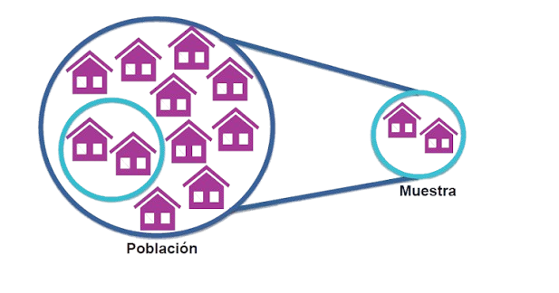
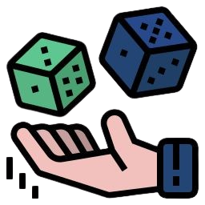

Interacción con el Ajedrez en la Comunidad Antonio José de Sucre – Sector I
Asignatura: Probabilidad y Estadística | Ingeniería de Sistemas 3er Semestre
Acceso al Sistema (Ajedrez.db)
Procesamiento Estadístico Automatizado
Monitoreo en tiempo real de los datos agrupados de la encuesta aplicada a 50 habitantes:
Sistema en espera...
Fórmulas Logarítmicas & Frecuencias - UNEFA
// Presiona el botón superior para calcular la Media de asistencia...
Población (Sector I)
50 Encuestados
Media Obtenida
0.0 días
Aprobación del Club
94% (SI)
Tabla de Frecuencia Integrada
| Intervalo | Xi | Fi | Xi * Fi | Facum | ni | hi |
|---|---|---|---|---|---|---|
| [0, 5 | 2.5 | 45 | 112.5 | 45 | 0.90 | 0.90 |
| [5, 10 | 7.5 | 0 | 0 | 45 | 0 | 0.90 |
| [10, 15 | 12.5 | 1 | 12.5 | 46 | 0.02 | 0.92 |
| [15, 20 | 17.5 | 0 | 0 | 46 | 0 | 0.92 |
| [20, 25 | 22.5 | 0 | 0 | 46 | 0 | 0.92 |
| [25, 30 | 27.5 | 1 | 27.5 | 47 | 0.02 | 0.94 |
| [30, 35] | 32.5 | 3 | 97.5 | 50 | 0.06 | 1 |
| ∑ | - | 50 | 250 | - | 1 | - |
Justificación del Proyecto
"Ante la falta de una casa comunal en la Comunidad Antonio José de Sucre – Sector I, el ajedrez se consolida como la opción más viable y económica para sus habitantes. Su facilidad de traslado y al ser un juego que no requiere de un espacio físico, toma relevancia..."
Evidencias e Instrumentos de Muestreo

Esquema de Población y Muestra

Recopilación Física de Datos
Gráfico Frecuencial

Eje de Investigación UNEFA Falcón